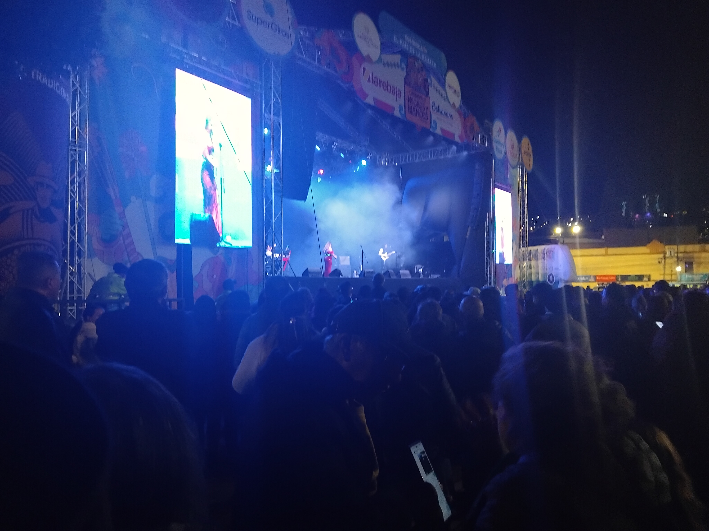

Seguridad
Trabajamos la capacidad de sostener una idea y expresarla con decisión, incluso cuando la respuesta no aparece inmediatamente.
La confianza se construye con práctica y experiencia. Buscamos que el MC pueda afrontar una ronda sin bloquearse ante el error, el público o el rival.

Trabajamos la capacidad de sostener una idea y expresarla con decisión, incluso cuando la respuesta no aparece inmediatamente.
Practicamos situaciones que obligan a reaccionar en tiempo real para reducir el miedo a quedarse sin palabras.
Desarrollamos una presencia coherente con lo que decimos, utilizando voz, postura y energía para comunicar con mayor seguridad.